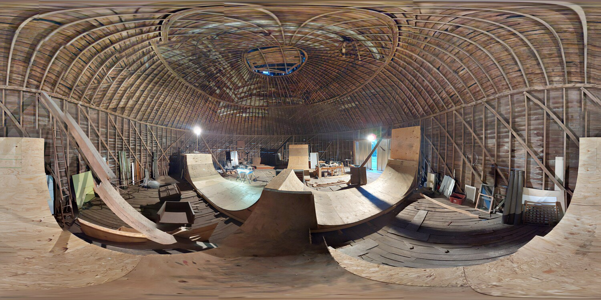
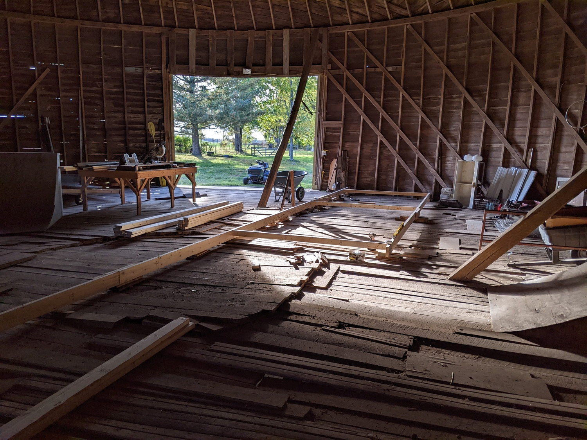
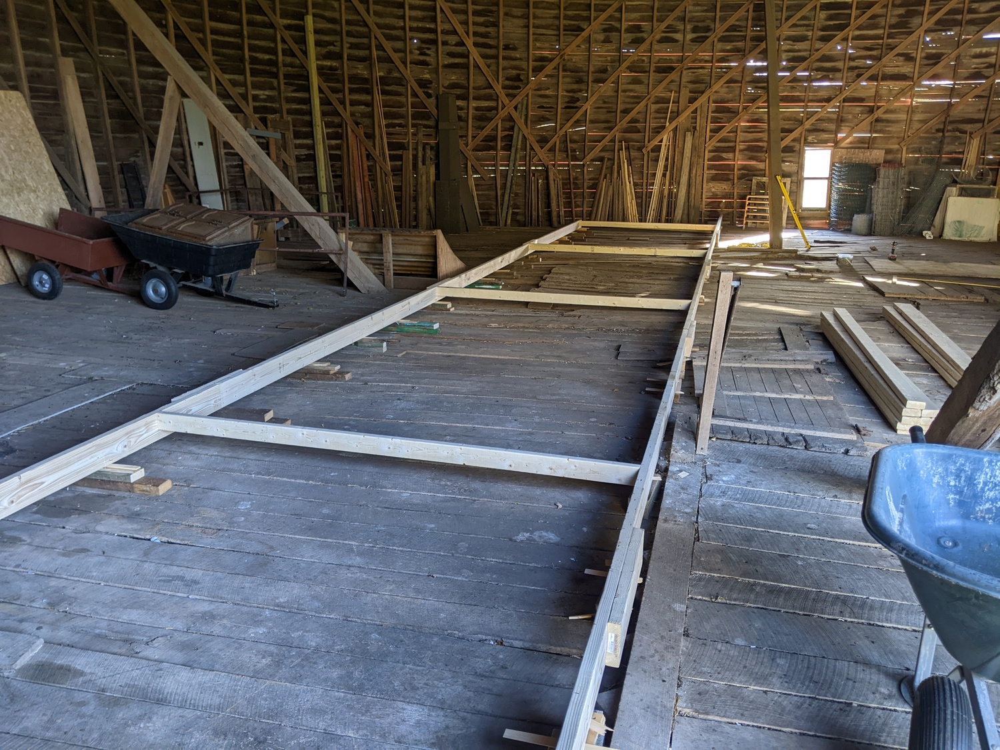
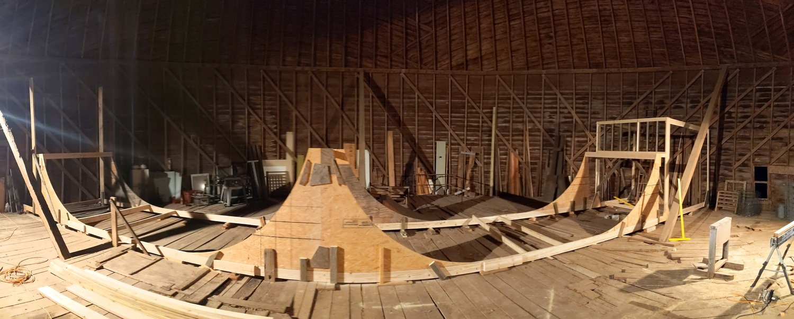
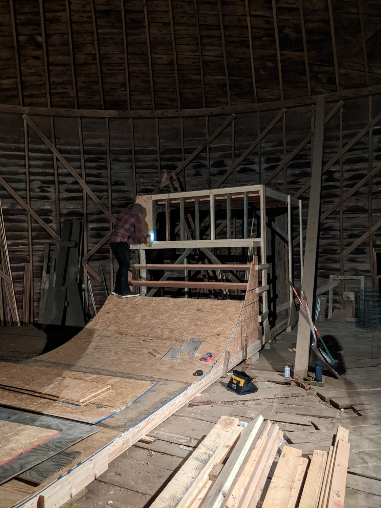
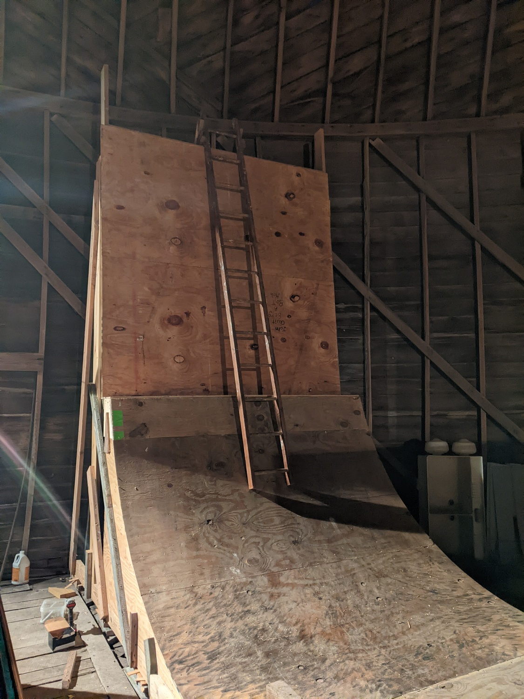
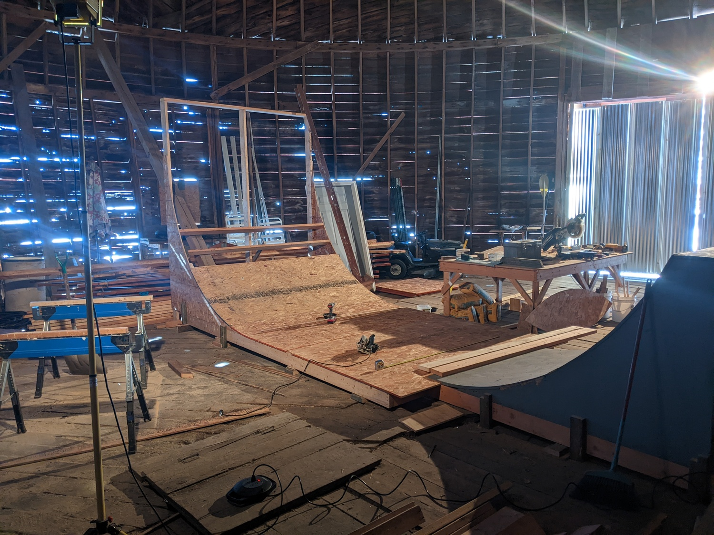
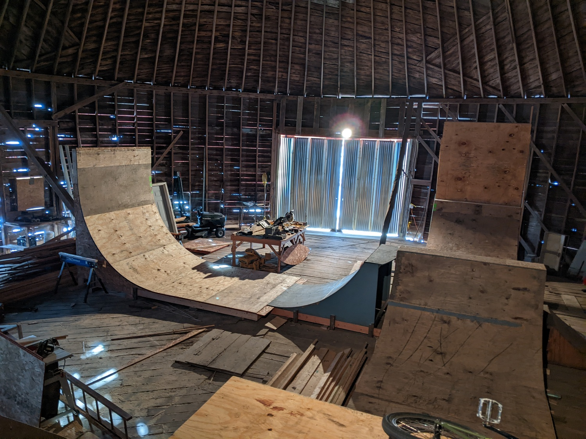
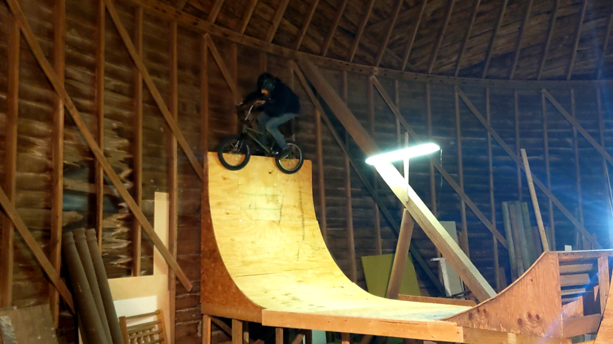

home | previous post | next post
As soon as the floor of the barn was something resembling solid and level, it was time to start on something I'd been dreaming about for as long as I can remember - building a skatepark.
Because the floor is still so rough, I've had to sheet not only the ramps themselves, but also the flat bottoms. This meant step one was to frame out a level base to actually start building on.
 Considering I'd been dreaming this for so long, I didn't really do a very good job actually planning. Version zero used all 7' transitions and had everything 5' tall.
This 5' quarter + 3' sub-box turned out not to really give enough speed for the spine, so it has since been re-built as a 6 1/2' quarter and rides much better.
This wallride is the only one of the original features that hasn't been modified yet. It might get changed from a slant wall to a true vertical wall at some point, but it's working for now.
Once the spine mini was working, we pretty quickly got bored going back and forth on the quarter/spine/wallride of phase 1, so I started expanding - phase 2.
 Phase 3 was to add a second hip going the other way. There's a lot of space on this side, so everything had to be compressed down. The hip landing is only about 2 1/2' high, and the vert wall is about 7' with a tight 5 1/2' transition.
